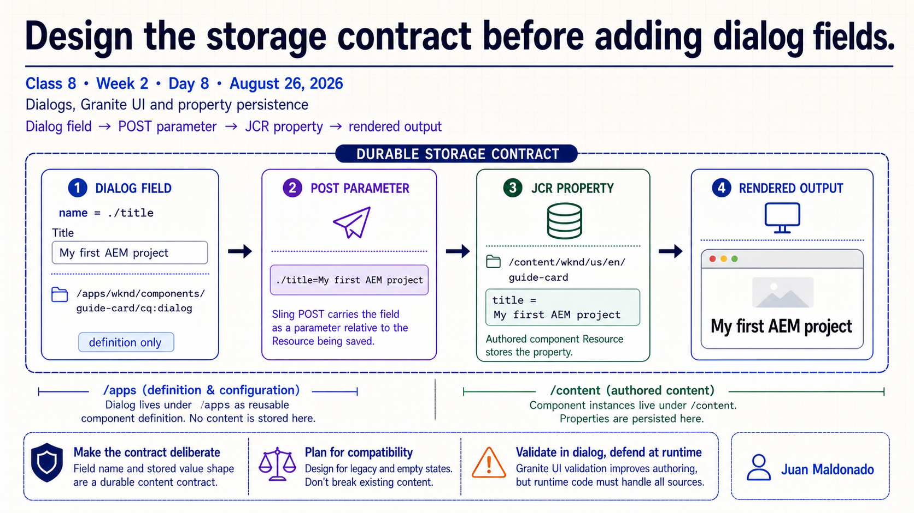
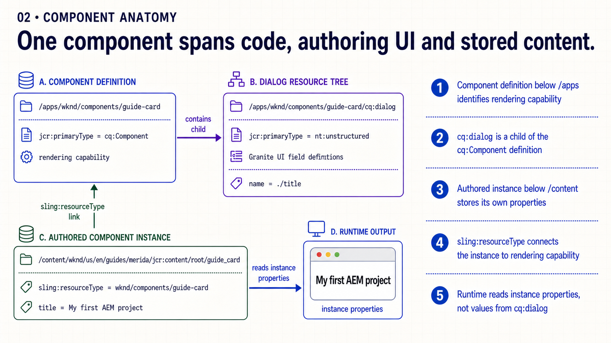
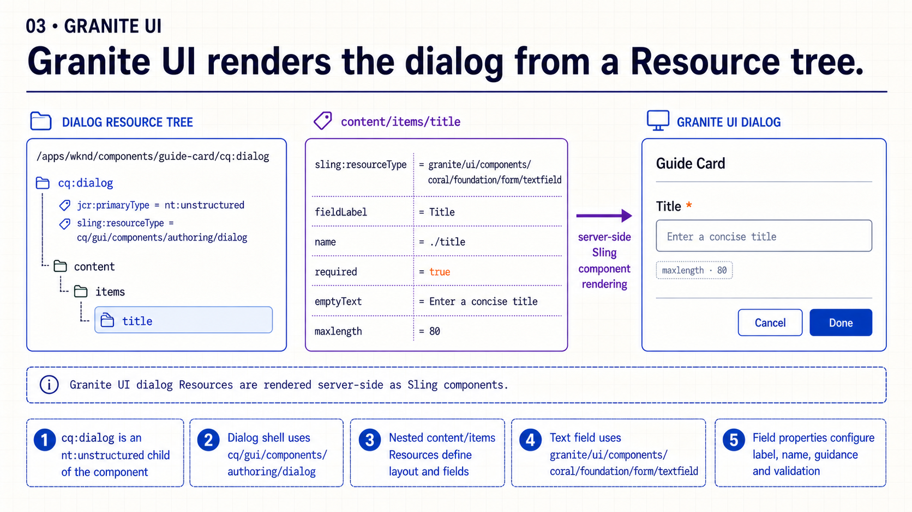
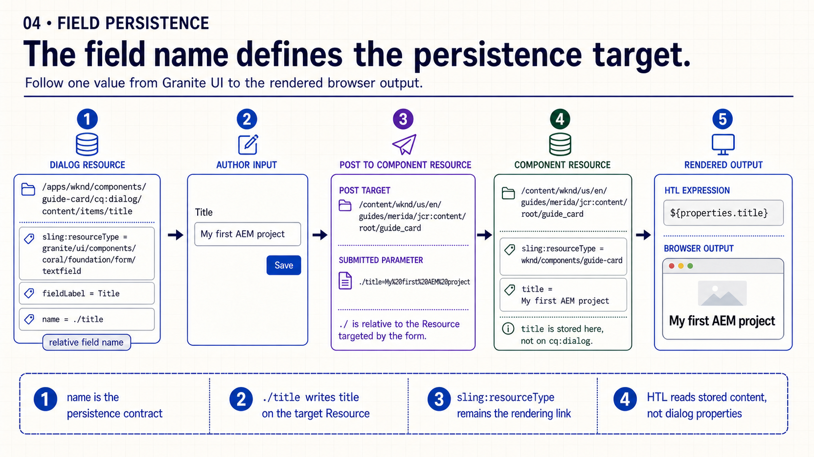
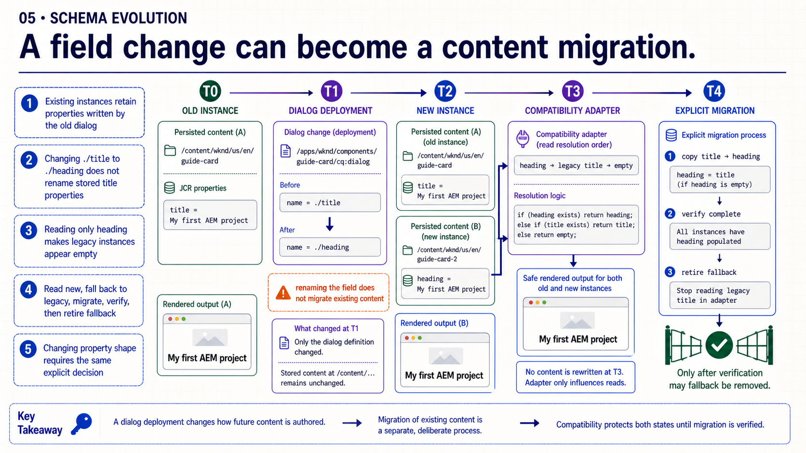
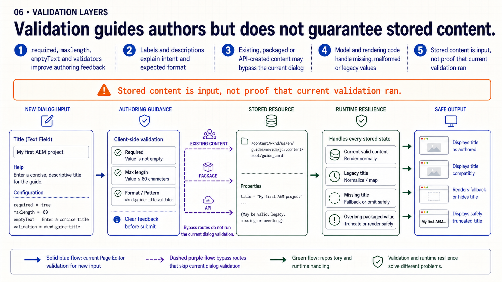
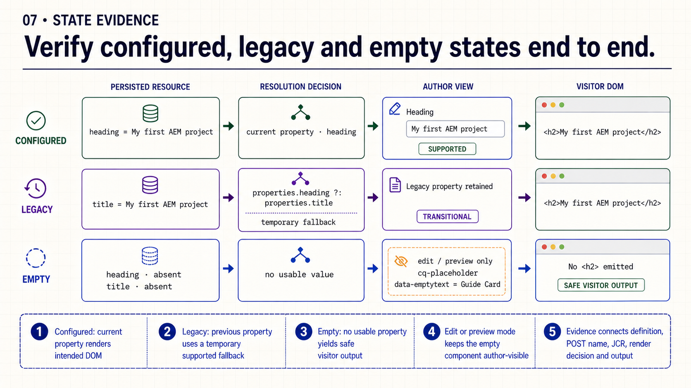
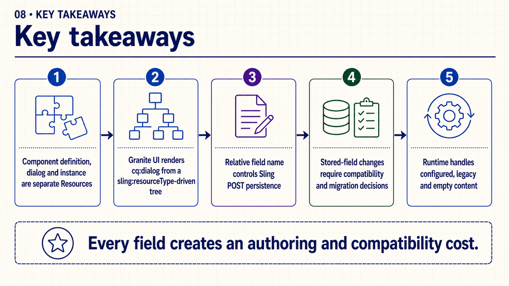
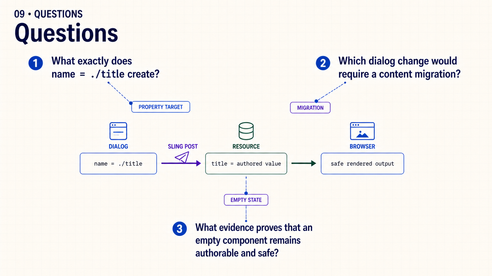

{kind=link}
Open: “Which part of a dialog field becomes a durable content contract?”
Class 8 · Week 2 · Day 8 · August 26, 2026
Follow one value from a Granite UI Resource through Sling POST, JCR persistence and resilient rendering.
name="./title" creates, locate the stored property and describe the behavior of configured, legacy and empty component states._cq_dialog/.content.xml separate from the JCR path cq:dialog.| Time | Activity | Facilitation |
|---|---|---|
| 0–3 | Retrieval | Ask: “What does a dialog field named ./title create?” |
| 3–18 | Slides 1–5 | Separate the Resources, inspect Granite UI and trace persistence and schema evolution. |
| 18–25 | Slides 6–7 | Compare authoring validation with configured, legacy and empty runtime evidence. |
| 25–27 | Slide 8 | Retrieve the five storage contracts. |
| 27–30 | Slide 9 | Questions only; no live demonstration dependency. |
Choose Copy slide as image and paste it into PowerPoint, or download the PNG.

Open: “Which part of a dialog field becomes a durable content contract?”

Separate: the dialog influences submission; the authored Resource is the runtime input.

Inspect: read the dialog as server-rendered Sling Resources, not visitor markup.

Trace: ./title writes title relative to the component Resource.

Warn: changing the field name does not migrate existing properties.

Distinguish: dialog validation improves feedback but does not validate repository history.

Verify: empty visitor output remains safe while edit mode keeps the component selectable.

Retrieve: ask which contract one proposed field change would affect.

Close: review the storage contract rather than only whether the dialog saves once.
The complete talk track is available in speech.md.
name, stored property and sling:resourceType.Practice bridge: use this trace as supporting evidence for Week 2 · Create the Guide Page authoring contract. No additional custom component is required this week.
{kind=link}
{kind=link}
{kind=link}
{kind=link}
{kind=link}
{kind=link}
{kind=link}
{kind=link}